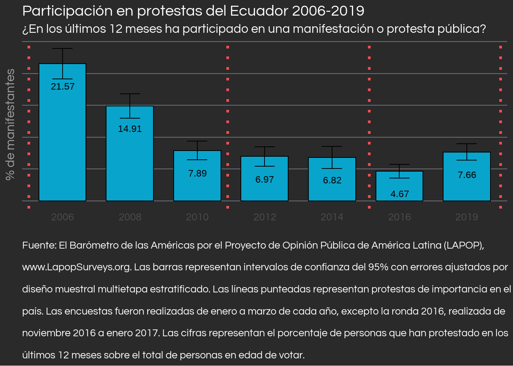
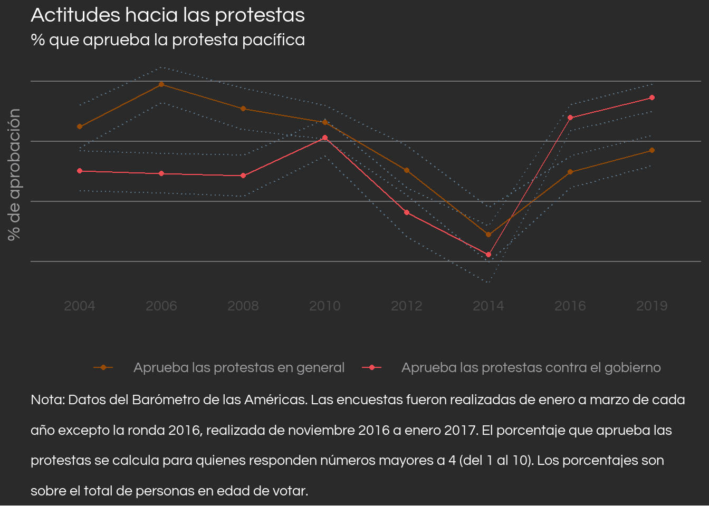
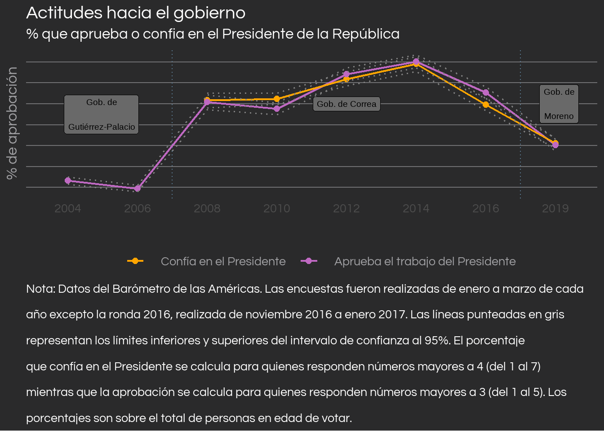

Nota
Este post fue originalmente publicado en El Quantificador, el blog de interés general del Laboratorio de Investigación para el Desarrollo del Ecuador (LIDE), una ONG ecuatoriana cuyo objetivo es la investigación y difusión de política pública basada en evidencia científica.
El Ecuador finalizó la primera mitad del 2022 con 18 días de movilizaciones, constituyendo así el Paro Nacional más extenso de las últimas décadas. Dada la creciente crisis política, social y económica así como la falta de garantías para una resolución pacífica, es importante comprender la manera en la que los ecuatorianos se comportan frente a las protestas. Un análisis de la encuesta de opinión pública del Barómetro de las Américas descubre que quienes participan en protestas son más propensos a ser hombres, a respetar el derecho a la protesta en general, a desaprobar la gestión del Presidente y a identificarse con algún grupo político. Notablemente, los resultados de la encuesta sugieren que quienes se autoidentifican como indígenas, quienes cuya situación económica ha empeorado y quienes están desempleados no son más propensos a participar en protestas. También se descubre que el respecto al derecho a protestar se mueve en contra al apoyo al Presidente de turno, lo que revela una preocupante situación: el ecuatoriano podría solo respetar este derecho cuando las movilizaciones se alinean a sus intereses políticos.
Reproducibilidad
Todo el código de R utilizado para este post esta incluido en el código fuente de esta página web, el cual puedes encontrarlo en mi perfil de GitHub. Sin embargo, para poder llegar a la base de datos limpia, recomiendo que revises la nota al final del artículo.
La participación en protestas
A mediados de junio 2022, la Confederación de Nacionalidades Indígenas del Ecuador (CONAIE) convocó a una movilización masiva en el país con el fin de que el presidente Guillermo Lasso incluya dentro de su plan de gobierno diez pedidos de índole económica y social [1]. Después de 18 días de manifestaciones, el paro terminó tras un acuerdo entre el gobierno nacional y la CONAIE [2]. Las manifestaciones dejan al Ecuador con nueve muertos, millones de dólares en daños y pérdidas económicas así como varios heridos y aprehendidos por la policía [3–5].
El Ecuador parece haber perdido la relativa estabilidad política que tuvo durante los diez años de gobierno de Rafael Correa, especialmente considerando la protesta histórica de octubre 2019, también liderada por la CONAIE contra el gobierno del entonces presidente Lenín Moreno [6]. Sin embargo, en nuestro país los períodos de estabilidad han sido la excepción y no la norma. Históricamente Ecuador ha tenido un golpe de estado cada 6 años y un 50% de éstos fueron exitosos derrocando al gobierno de turno [7].
La encuesta del Barómetro de las Américas (AB) del Latin American Public Opinion Project (LAPOP) ha llevado a cabo varios sondeos de opinión pública en Ecuador desde el 2004, incluyendo una batería de preguntas sobre protestas desde 2006. La última vez que se realizaron estas preguntas fue a inicios del 2019, lo que nos permite observar la opinión pública poco antes de la protesta de octubre 2019, en donde la CONAIE y otras organizaciones también convocaron movilizaciones en contra del entonces presidente Lenín Moreno.
El gráfico de arriba nos muestra que en el 2006 cerca del 21.57% de los encuestados reportaron haber asistido a una protesta en los últimos 12 meses —probablemente por la “Rebelión de los Forajidos” que derrocó al Presidente Lucio Gutiérrez—. A partir de ese año, el porcentaje de participación decrece gradualmente en el país, culminando a comienzos del 2019 con un 7.66%. En verano del 2015 hubo importantes movilizaciones convocadas por la CONAIE y políticos de la oposición contra el gobierno de Rafael Correa [8,9]. Sin embargo, las manifestaciones parecen no haber convocado a tantas personas, aún cuando éstas coincidieron con la más baja popularidad del régimen del entonces presidente [10].
Características de los protestantes
¿Qué caracteriza a los manifestantes ecuatorianos? A lo largo del tiempo éstos han sido mayoritariamente hombres, excepto en el 2014 y 2019, en donde no existen diferencias estadísticamente significativas entre hombres y mujeres. Es más probable que quienes protesten estén identificados con algún grupo político 1 y no aprueben la gestión del presidente. Aunque los protestantes, en general, son más jóvenes y más educados que quienes no protestan, la diferencia es casi negligible- contrario a lo que se pensaría-.
¿Son quienes salen a las calles más pobres que quienes no protestan? No. De hecho, apenas el 33% de quienes protestan consideran que su situación económica es peor que la de hace 12 meses. Este porcentaje es solo levemente mayor al porcentaje de no protestantes que consideran que su situación ha empeorado. De igual manera, la tasa histórica de desempleo 2 de los protestantes no es estadísticamente diferente a la tasa de desempleo global de la muestra -salvo en 2014, donde sí existe una diferencia de diez puntos porcentuales-.
Un detalle clave sobre los protestantes es su composición racial y los datos de la encuesta permiten saber que no existen diferencias estadísticamente significativas entre los porcentajes históricos de protestantes y no protestantes indígenas. De hecho, el porcentaje que representan los indígenas sobre el total de manifestantes es cercano a solamente el 5% histórico desde 2006 a 2019. Esta baja cifra puede estar subestimada dado que no se realizan demasiadas encuestas en cantones rurales, donde la población indígena se concentra. Sin embargo, tiene sentido pensar que la cifra real no debería desviarse tanto de la que se presenta aquí: al ser los indígenas una minoría de la población del país3, es probable que también constituyen una minoría dentro de quienes participan en protestas. Por otro lado, sí existe una diferencia estadísticamente significativa en participacion en protestas respecto al porcentaje de gente que se autoidentifica como blanca, al ser menos probable que ellos protesten.
Participación en protestas vs. apoyo al derecho de protesta

Viene al caso considerar una diferencia clave que pudo haber sido fácil de confundir últimamente, especialmente mientras las protestas tomaban lugar: la participación en protestas no es lo mismo que la aprobación a las mismas. El Barómetro de las Américas de LAPOP nos permite construir una serie de tiempo para monitorear el apoyo histórico a las protestas de los ecuatorianos, como se ve a continuación.
Los datos nos muestran que, previo a la protesta del 2019, el derecho a protestar tanto en general como de grupos de oposición ha sido aprobado por la mayoría de la población en edad de votar, salvo en el 2012 y en el 2014. En un principio, más ecuatorianos apoyan las protestas en general que las protestas de los grupos en contra del gobierno actual4. Sin embargo, la relación se invierte para 2016, cerca del fin del gobierno de Correa, en donde era más probable que una persona apruebe las protestas contra el actual gobierno que las protestas en general.

Un hecho que salta a la vista es que el período de menor tolerancia a la protesta se dio durante el pico de popularidad del gobierno de Rafael Correa, como puede observarse en el gráfico de la derecha. En períodos donde el presidente era popular, existía mayor rechazo hacia la protesta mientras que en períodos donde el presidente era menos popular había más aprobación hacia la protesta. Desde que Lenín Moreno se distanció del antiguo régimen, se vuelve a tener una mayor tolerancia a la protesta. No debemos inferir causalidad de correlación solamente, sin embargo, estos hechos abren la puerta a una posible explicación de protestas a conveniencia. Es decir, las protestas son válidas y legítimas cuando se alinean a mis intereses y tendencias políticas, pero si es que no… ¿no son válidas?
Table 1: Aprobación al derecho a protestar por participación de los últimos 12 meses en protestas
| Ha participado en una protesta | Aprueba | No aprueba |
|---|---|---|
| Sí | 74% | 26% |
| No | 57% | 43% |
| Ha participado en una protesta | Aprueba | No aprueba |
|---|---|---|
| Sí | 62% | 38% |
| No | 55% | 45% |
La tabla anterior nos muestra el porcentaje histórico de dos tipos de aprobación a las protestas clasificado por la participación en protestas. Como se esperaría, un protestante es más propenso a aprobar el derecho de protestar que alguien que no ha protestado. Sin embargo, también se esperaría que quienes participan en protestas aprueben ampliamente el derecho a protestar en cualquier ámbito, pero existe un 26% de ellos que no lo han aprobado históricamente. Respecto al apoyo a las protestas de los grupos de oposición al gobierno, los porcentajes son peores: históricamente un 38% de protestantes no aprueba ese derecho. Este es un fenómeno extraño y preocupante que merece ser observado más a fondo en el futuro, con datos actualizados.
Algunas implicaciones
El análisis realizado se puede resumir en los siguientes puntos:
Los protestantes tienden a aprobar el derecho a protestar (aunque no tanto), identificarse con algún ala política (derecha, izquierda o centro) y a desaprobar el trabajo del presidente. Es menos probable encontrar manifestantes mujeres y blancos.
No existen diferencias significativas entre protestantes y no protestantes en cuanto a edad, años de escolaridad, la probabilidad de ser indígena, estar desempleado y tener una peor situación económica.
Se encuentra una clara divergencia entre la participación en protestas y la aprobación de las mismas, siendo siempre el porcentaje de aprobación mucho mayor al de participación.
Inquietantemente, la aprobación a las protestas se mueve en contra del apoyo al presidente de turno. Mientras más popular el gobierno, menos respetado el derecho a la protesta.
Es necesario entender lo que implican las protestas, tanto para quienes las lideran y las enfrentan como para los ciudadanos comunes y corrientes. En mi opinión, es incluso más importante que el ecuatoriano promedio las comprenda, puesto que son ellos los que suelen estar en primera línea de las manifestaciones a diferencia de aquellos políticos, dirigentes y autoridades que las protagonizan. No es justificable la violencia del estado hacia la protesta social, así como la minimización de los problemas que aquejan a las comunidades índigenas5, pero la violencia por parte de protestantes tampoco puede justificarse. Informar nuestra discusión sobre la coyuntura del país con hechos, libres de ideología y subjetividad, es extremadamente imperante para encaminarnos hacia una mejor nación, evitando la violencia y polarización social así como protegiendo el derecho a la protesta pacífica, clave para el buen funcionamiento de una democracia [12].
Las protestas de junio 2022 finalizan con concesiones de ambas partes, las cuales desafortunadamente solo giran alrededor del precio de la gasolina, postergando hacia el mediano plazo la resolución de los otros problemas como la obtención de precios justos para los productores agrícolas y el manejo de la crisis de inseguridad. La historia amenaza con repetirse en esta mesa de diálogo, recordando que en el 2019 las protestas finalizaron por una estabilización del precio de la gasolina aunque los actores involucrados fueron incapaces de llegar a un acuerdo [6]. Nuestro país no puede aguantar más violencia entre protestantes y autoridades cada dos años; los agentes sociales deben esforzarse para que el Ecuador sea justamente eso: un país, y no un licuador6 al que le entregas algo íntegro y te lo devuelve triturado. Debemos exigir al resto y exigirnos a nosotros mismos la fuerza para construir un país de paz y prosperidad, pero también un país de cambio pacífico y efectivo cuando lo apremie.
Nota
Este post fue orgullosamente concebido con Quarto y R mediante RStudio, originalmente publicado en El Quantificador del Laboratorio de Investigación para el Desarrollo del Ecuador (LIDE). Visita el repositorio de GitHub para replicar los cálculos y aprender un poco más sobre los datos, y no dudes en contactarme a mí o al equipo de El Quantificador con preguntas. Se utilizó las bases de datos de acceso libre del Barómetro de las Américas, por lo que agradecemos al proyecto de Opinión Pública de América Latina (LAPOP) y a sus principales donantes (la Agencia de los Estados Unidos para el Desarrollo Internacional, el Programa de las Naciones Unidas para el Desarrollo, el Banco Interamericano de Desarrollo y Vanderbilt University) por poner a disposición los datos.
Referencias
1.
Pazmiño, L.B. Esto sabemos del paro del 13 de junio. GK 2022.
2.
GK El paro nacional terminó. GK 2022.
3.
María, J.; Janetsky, M. ¿Por qué hay protestas en Ecuador? The New York Times 2022.
4.
Montalvo, D. Daños por protestas le costaron a Quito $25.000 esta semana. La República EC 2022.
5.
Redacción El Comercio Las protestas causan 4 problemas. El Comercio 2022.
6.
Cultura política de la democracia en Ecuador y en las Américas 2021: Tomándole el pulso a la democracia; Moscoso Moreno, A., Moncagatta, P., Donoso, J.C., Larrea, S., Montalvo, J.D., Eds.; 2022;
7.
Loaiza, Y. Un golpe cada 6 años: la trágica historia de derrocamientos y convulsión social del Ecuador. infobae 2022.
9.
BBC Mundo Ecuador: en Quito y Guayaquil marchan nuevamente contra Rafael Correa. BBC News Mundo 2015.
10.
Meléndez, C.; Moncagatta, P. Ecuador: Una década de correísmo. Revista de Ciencia Política de Santiago 2017, 37, 413–448, doi:10.4067/s0718-090x2017000200413.
11.
13.
Dell, M. The Persistent Effects of Peru’s Mining Mita. Econometrica 2010, 78, 1863–1903, doi:10.3982/ECTA8121.
Footnotes
Un 17% de personas que protestan reportan no tener identificación política, mientras que un porcentaje mayor de no protesantes (23%) reporta lo mismo. Los grupos políticos a elegir en esta pregunta son “la izquierda” y “la derecha”, denotados por una escala del 1 al 10.↩︎
A diferencia de la tasa de desempleo normal, calculada sobre el total de población económicamente activa, esta tasa de desempleo se calcula sobre el total de personas en edad de votar, por lo que debemos tener cuidado al compararla con las tasas reportadas por el INEC mensualmente.↩︎
Para 2020, los indígenas constituían alrededor de un 6% de la población nacional [11].↩︎
La pregunta original realizada en la encuesta pregunta sobre el grado de aprobación a la posibilidad de las personas que “siempre hablan mal de la forma de gobierno actual y del sistema de gobierno” [12].↩︎
Imagen original de @ecuacultural.↩︎